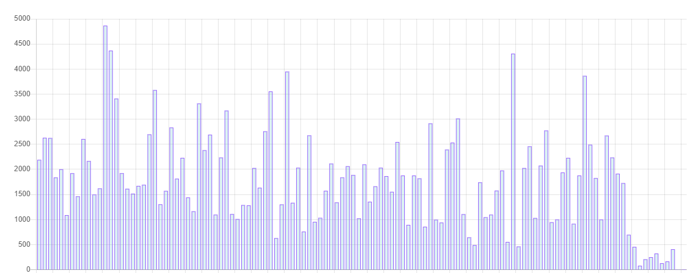
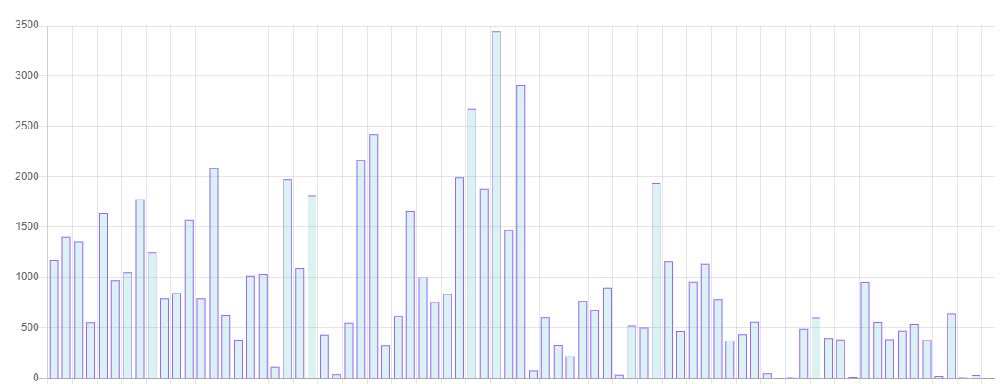

Graphical analyses
You can find different graphical analyses that give information about the progress of students in a specific course. These graphs can be very general or specific


You can find different graphical analyses that give information about the progress of students in a specific course. These graphs can be very general or specific